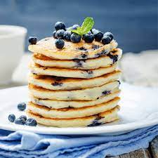
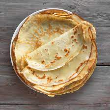
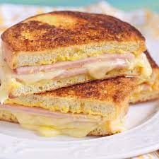

Pâtes Bolognaise
Durée moyenne : 30 minutes

Pâtes Carbonara
Durée moyenne : 25 minutes

Pancakes
Durée moyenne : 25 minutes
Salade César
Durée moyenne : 15 minutes
Spaghetti Aglio e Olio
Durée moyenne : 20 minutes
Crêpes Classiques
Durée moyenne : 30 minutes
Croque-Monsieur
Durée moyenne : 25 minutes